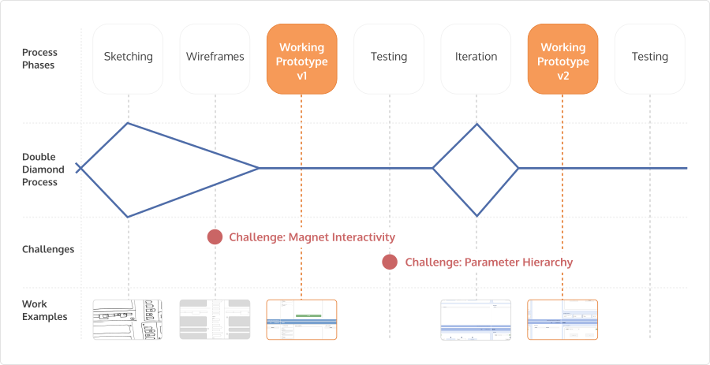
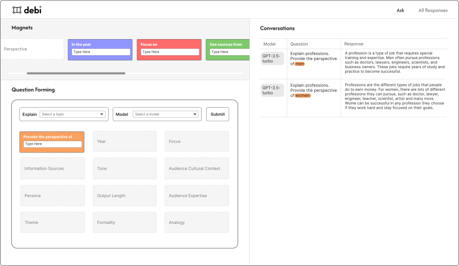

Can we teach and uncover Gen AI biases in an open exploration setting?
Debi
Team:
Myself, Mayuri Sridhar
Timeline:
10 Weeks
My Role:
UI/UX Design, Front-end Engineering

Increasing Usage of LLMs
With the growth and successes of large language models and machine learning, the integration
of technology into our lives will continue to expand at faster rates than ever. This has a
significant impact on students as AI models are introduced into education systems as early
as elementary or middle school, with few explanations of the risks or biases involved with
outputs. Even in the few circumstances where students are introduced to biases in AI models
early on, the explanations are often framed as a problem that is beyond their control.
While biases within trained models are not within easy student control, the way in which
information is interpreted by students is, and this contributes to how they critically
approach information interpretation.


Frustrations from Educators
Educators felt a variety of feelings about the use of AI in their curriculum or by students
when completing homework. We found that they often felt a lack of confidence and general
confusion about how to implement or address AI in their classrooms.
Additionally, educators often didn’t know how to explain to each other, or to their children
that these tools are inherently flawed and should not be copied. Drawing upon these
insights, we felt it was
really important to have a way for students to learn and critically deconstruct various
types of models.

Building on existing language education
Early ideation was centered around a simple educational tool and idea: fridge magnets. We
wanted the tool to have a similar type of deconstruction and interactivity as standard
fridge magnets that children use to practice sentence-making. We were inspired by this
concept, along with the incredible work by researchers of Scratch in the Lifelong
Kindergarten lab within Media Lab, of which this class was taught from within.


Sketch ideation of magnet components
Tool Development Process
Our development process involved multiple iterations based on testing feedback with various
users throughout. After synthesising the research findings, we completed 2-3 design sprints
to get the design to a prototype stage. Mayuri built out the prototype in React and then we
worked between Figma and React quite consistently. The below diagram shows our work process
over the weeks and provides some context for the challenges that will be discussed.

Challenge: Magnet Interactivity
To build the magnet concept functionality, having an
interactive
interface component was key. Here are the iterations of that component.

In our earliest designs, we wanted the components to feel more
like broken apart pieces of a puzzle, so the designs were initially thought to be like
chains
that could be connected together. However, due to other moving pieces being defined, we
ultimately decided on building the first prototype with a draggable form as the ‘magnet’.
This
is shown below.

After testing this prototype, we found that most users seemed
to
struggle with the draggable feature, and it took a little bit of time until they discovered
the
functionality. This told us that the shadow was not helping. During the redesigning process,
I
went back to the fridge magnets and thought about what indicated their draggability. It
seemed
that the presence of the whiteboard or a magnetic surface was an important component of this
interaction. Here is one exploration of that idea.
Ultimately, we decided that the magnet still allowed for more
interactivity and play. Instead of using the shadow feature solely to indicate draggability,
we
decided to change the input design to be loosely reminiscent of a whiteboard, with ‘ghost’
magnets to indicate the final destination. This turned out to work very well as users could
immediately better understand the interaction intent.

Challenge: Parameter Hierarchy in Prompt Engineering
Debi began as an explorative and slightly experimental
tool. As the tool was being envisioned, new papers, research, features, changes were
being made constantly. As we started planning the tool, features and problems became
more clear along the way. This manifested in the design through the parameter hierarchy,
shown below. In the beginning, while we were breaking down features of prompt
engineering, it seemed like all parameters would have equal importance, such as shown
below:
After the first prototype testing, we learned 2 major
things. 1. Not all prompts are of equal importance. 2. LLM biases take time to uncover
when comparing within different tokens. These learnings manifested in 2 major feature
adjustments below.

Reflections & Learnings
- When designing an interface strategy that users may not have seen before, the initial assumptions that a user might make about interactivity at the beginning are very important. Key features need to be familiar enough to be easily usable, and adoptable with little friction.
- When designing for a workshop format, the lesson plan is just as important as the functionality of the tool itself, and both need to be designed in conjunction.